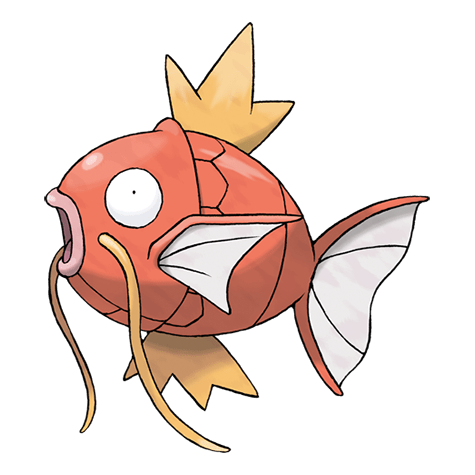

Назад
Мэджикарп

Мэджикарп — Покемон первого поколения под номером 129 в Покедекс. Обитает он в регионе Канто и относится к Водному типу. Мэджикарп довольно бесполезен, так как способен только барахтаться и плескаться. Такое поведение побудило учёных заняться его исследованием.
Тип:
Водяной
Эволюция
# 129 Мэджикарп
=>
# 130 Гиарадоса